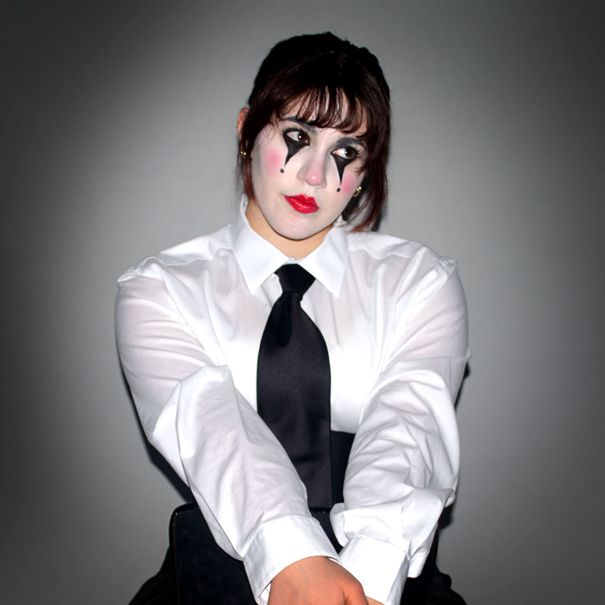

Hi There!
Steffi Rotella is a Rhode Island based artist who is currently a Studio Arts major at Rhode Island College, concentrating in Graphic Design. She works in a variety of mediums, both traditional and digital, as well as creative writing, photography, film and makeup. Starting from a very young age, art became a valuable outlet for self-expression as well as dealing with stress and anxiety.
Taking inspirations from bold creatives such as Tim Burton and David Lynch as well as the aesthetics of grunge and rock music genres, the majority of her works aim to create a striking balance between the dark and whimsical. She employs rich color palettes, moody tones and unrestricted creativity to become the basis of her creations, hoping to create scenes that capture even more grotesque subjects in a charming and refined light. She does not want to be defined by any single medium, but, rather, by her ability to use as many as possible to create and tell stories.
